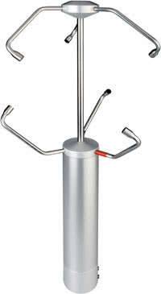

Suite for convert and analyse the ultrasonic anemometer raw data. The package is wrote in R scripting language except some addictional tool that was written in python or awk.
Features
The suite permit to convert and store in a data.frame all significant data as horizontal velocity and direction of wind. By HPASS filter, performed with FFT of R statis package, is possible to isolate the contribute of PBL turbulence by the mean-wind direction.
Languages and Frameworks:
La libreria permette di acquisire dati in un certo modo, compatibile con le cose con cui vogliamo renderle compatibili, avra` una cosa grafica e sara` molto bella.

Ultrasonic Anemometer
Qui possiamo metterci un po' di cose graficose con il pacchetto web di R ... o qualche troiata in java